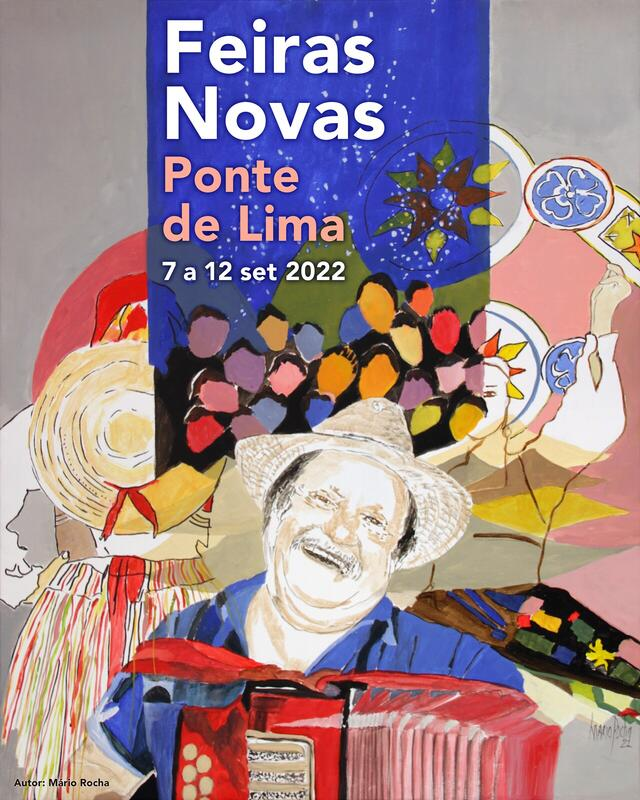

Vila de Ponte de Lima
História da Vila
Em pleno coração do Vale do Lima, a beleza castiça e peculiar da
vila mais antiga de Portugal esconde raízes profundas e lendas
ancestrais. Foi a Rainha D. Teresa quem, na longínqua data de 4 de
março de 1125, outorgou carta de foral à vila, referindo-se à
mesma como Terra de Ponte. Anos mais tarde, já no século XIV, D.
Pedro I, atendendo à posição geoestratégica de Ponte de Lima,
mandou muralhá-la, pelo que o resultado final foi o de um burgo
medieval cercado de muralhas e nove torres, das quais ainda restam
duas, vários vestígios das restantes e de toda a estrutura
defensiva de então, fazendo-se o acesso à vila através de seis
portas.
A ponte, que deu nome a esta nobre terra, adquiriu sempre uma
importância de grande significado em todo o Alto Minho, atendendo
a ser a única passagem segura do Rio Lima, em toda a sua extensão,
até aos finais da Idade Média.
Rotas Turisticas
Miradouro de Santo Ovídio
Dominando sobre Ponte de Lima, o Vale do Lima até à foz, e os
vales dos rios Labruja e Estorãos, o Miradouro de Santo Ovídio
oferece vistas privilegiadas dum horizonte digno de contemplação.
É provavelmente o melhor miradouro de Ponte de Lima. Monte, capela
e miradouro recebem o nome de Santo Ovídio.
Lagoas de Bertiandos
A melhor forma de conhecer esta área natural singular é a pé.
Existem trilhos de dificuldade baixa, devidamente marcados, que
permitem um contacto próximo com a elevada biodiversidade de flora
e fauna que estes bosques higrófilos, pastagens húmidas, lagoas,
rios e pinhais sustentam, com troços de passadiços elevados e
postos de observação de aves e vida selvagem.
Pontos de Interesse
Ponte Romana e Medieval
A ponte romana data provavelmente do século I, uma vez que foi nessa
época que se procedeu à abertura do trajeto de uma das vias
militares do antigo "Conventus Bracaraugustanus", que ligava Braga a
Astorga, neste caso a Via XIX, mandada abrir pelo Imperador Augusto.
No que respeita à parte medieval, pese embora se possa recuar no
tempo, pelo menos até aos reinados de D. Pedro I e de D. Fernando,
por ligação direta à construção das muralhas e das torres que
fortificavam a vila, obra terminada em 1370, ou até de D. Dinis,
tendo em conta documentação que refere uma ponte, que também
poderia, por aquela altura, ser de madeira, sabemos da sua
existência no reinado de D. Manuel I, mais precisamente em 1504, por
este monarca ter mandado fazer novo calcetamento e colocar merlões
para decoração da ponte, pois já não se justificavam como opção
defensiva e militar.
Tasca das Fodinhas
Tasca típica e tradicional de Ponte de Lima também conhecida como
"Os Telhadinhos". Situada no centro da vila, é famosa pelas
pataniscas de bacalhau com uma malga de tinto a acompanhar.
INE (População ao longo dos anos)
| 2017 | 2018 | 2019 | 2020 | 2021 |
|---|---|---|---|---|
| 2198 | 2198 | 2198 | 2204 | 2204 |
Eventos
